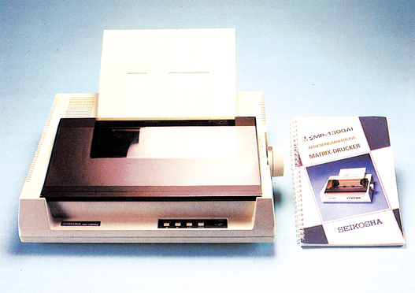
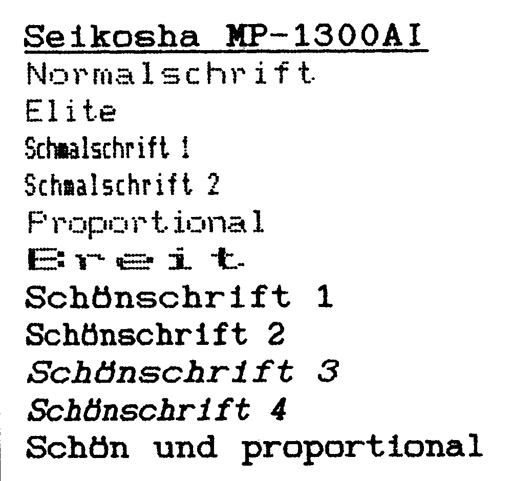

Seikosha MP-1300 AI - Geschwindigkeit ist Trumpf
Haben Sie schon mal einen mit 300 Zeichen pro Sekunde über das Papier rasenden Druckkopf gesehen? Der »Neue« von Seikosha beherrscht diese Geschwindigkeit. Aber das ist noch nicht alles, denn eine Schönschrift-Qualität und eine Farboption gehören ebenfalls zu den Leistungen des MP-1300 AI.
Seit seiner Markteinführung hat der C 64 sicherlich schon mehrere Wälder in Form von Papier auf Seikosha-Druckern mit Texten und Grafiken bedruckt. Erinnert sei zum Beispiel an den legendären Seikosha GP100VC. Diese Drucker der ersten Generation schafften gemütliche 30 Zeichen in der Sekunde und entwickelten dabei das Geräusch einer Kreissäge. Heute werden von Seikosha Geräte angeboten, die dem aktuellen Stand der Technik entsprechen oder ihn in manchen Bereichen sogar übertreffen. Einer dieser neuen professionellen Multifunktionsdrucker stand der 64'er-Redaktion für einen ausführlichen Test zur Verfügung. Der MP-1300 AI hat alle Funktionen, die der Kunde heute von einem modernen Drucker erwarten kann. Er beherrscht sämtliche Schriftarten, einschließlich Schönschriftdruck in vielen Variationen, ist hervorragend grafikfähig, mit 300 Zeichen in der Sekunde superschnell und druckt auf Wunsch farbig. Ohne Mehrkosten ist ein 10-KByte-Zeichenpuffer, eine Centronics- und eine serielle RS232C-Schnittstelle bereits in der Grundausstattung enthalten. Der Drucker arbeitet mit den verschiedenen für den C 64 verfügbaren Datei-, Grafik-, und Textprogrammen problemlos zusammen, wenn man ein geeignetes Interface verwendet (siehe Test in Ausgabe 2/86). Sehen wir uns den MP-1300 etwas näher an. Seine soliden 8,5 Kilogramm Gewicht zeugen für gediegenen Materialeinsatz. Auch das Design (Bild 1) ist durchaus gelungen. Wichtiger als das Aussehen ist jedoch die Ausstattung und der praktische Druckbetrieb.

Die Installation unseres Testgerätes bereitete keine Probleme. Das gut gegliederte Handbuch in deutscher Sprache, zeigt mittels ausführlicher Zeichnungen, wie der Drucker angeschlossen und in Betrieb gesetzt wird. Außerdem werden auf den über 160 Seiten des Handbuchs die Codes zur Steuerung des Druckers mit vielen Beispielen anschaulich erklärt. Dies und ein zusätzlicher Anhang mit Erläuterung von EDV- und Drucker- Fachausdrücken ermöglicht auch dem Einsteiger, sofort die zahlreichen Fähigkeiten des Seiko-sha-Druckers zu nutzen. Beim Einsetzen der Farbbandkassette bleiben die Finger sauber. Je nach Entscheidung ob Endlospapier oder Einzelblätter bedruckt werden sollen, wird der Traktor zum Papiervorschub angebracht. Die Zuführung des Endlospapiers kann wie gewohnt von der Rückseite oder zusätzlich von der Druckerunterseite erfolgen. Dies ermöglicht das platzsparende Unterbringen des Papiervorrats im Druckerständer. Das übersichtliche Bedienerfeld mit LED-Anzeigen und Tasten für Blatt-, Zeilenvorschub, Einschalten des Schönschriftmodus, Einstellen des rechten und linken Druckrandes sowie On-und Offline, befinden sich vorne am Gerät. Einzelblätter werden bei Betätigung eines Hebels neben dem Walzendrehknopf automatisch ohne Verheddern eingezogen. Der Hebel zur Anpassung an die Papierstärke und die Anzahl der Durchschläge befindet sich gut zugänglich auf der rechten Geräteseite. Ebenfalls leicht erreichbar sind die DIP-Schal-ter zur Auswahl des Zeichen-satzes und weiterer Druckarten. Sie befinden sich unter einer Abdeckung auf der
Druckerrückseite. Leider wird bei diesem Drucker ein Zugtraktor zum Transport von Endlospapier eingesetzt. So kann erst das zweite Blatt bedruckt werden, ein Blatt geht jeweils verloren. Außerdem fehlt eine scharfe Papierabreißkante. Als Zubehör ist eine automatische Einzelblattzuführung erhältlich. Der Seikosha MP-1300 AI kann wahlweise mit einem Farbdruck-Modul (499 Mark) ausgerüstet werden.
Ungehindert von Zeilenvorschub und anderen Hindernissen könnte der Seikosha maximal 300 Zeichen in der Sekunde auf das Papier bringen. Im praktischen Betrieb schafft er zirka 150 Zeilen zu je 80 Zeichen in der Minute, das sind 12000 Zeichen pro Minute oder 200 in der Sekunde in Normalqualität und 44 Zeichen/Sekun-de im Schönschriftmodus. Damit ist der MP-1300 einer der schnellsten unter den bisher von uns getesteten Druckern. Der Seikosha verarbeitet — ohne jede Anpassung — für Epson-Drucker erstellte Textdokumente. Dies ist weiter nicht erstaunlich, denn der MP-1300 verwendet zur Auswahl der Schriftarten und zur Steuerung des Druckbetriebs die Codes der ESC/P-Norm. Außerdem beherrscht er die beiden Zeichensätze des IBM-PC, den Standard-ASCII- sowie sieben nationale Zeichensätze. Der Seikosha bringt die üblichen Schriftarten wie Pica, Elite, Schmalschrift, Kursiv, Proportional, Sub-, Superscript und kann unterstrichen, fett, doppelt und doppelt breit drucken. In Korrespondenzqualität steht Pica und Elite in geraden und kursiven Lettern sowie Proportionalschrift zur Verfügung (Bild 2 und 3). Der Zeichenpuffer ist mit 10 KByte großzügig ausgestattet. Mit 7 KByte ist der Puffer bei Verwendung eines benutzerdefinierbaren Zeichensatzes, der maximal 256 Zeichen umfassen kann, noch ausreichend dimensioniert.

Der MP-1300 AI ist schnell auf Farbe umgerüstet — das schwarze Farbband gegen ein mehrfarbiges austauschen, das Farbdruckmodul einschieben, und schon bringen die neun Nadeln des MP 1300 Farben in den Ausdruck. Auch hier wurde wieder darauf Wert gelegt, daß bestehende Farbausdruckprogramme ohne Änderung eingesetzt werden können — der MP-1300 AI verwendet die inzwischen zum Standard gewordenen Farbsteuerbefehle des Epson JX.
Knapp verfehlt
Der Seikosha MP-1300 AI erfüllt das Konzept der Multifunktionsdrucker. Er ist sehr schnell, beherrscht Schönschrift, bringt Grafiken und Text wahlweise farbig auf das Papier, und ist in der Lage, farbige oder schwarzweiße Hardcopies vom Bildschirm anzufertigen. Der Drucker eignet sich aufgrund seiner Grafikfähigkeit und der Möglichkeit, farbig zu drucken, für den engagierten Heimanwender. Seine vorzügliche Schönschrift und die hohe Druckgeschwindigkeit sowie seine Zuverlässigkeit auch bei stundenlangem Dauerbetrieb bei relativ niedrigem Geräuschpegel, rechtfertigen den Preisvon 1895 Mark und ermöglichen den Einsatz als reinrassigen Bürodrucker zur Erledigung von viel Korrespondenz. Abstriche mußten wir allerdings bei der zwar flotten, aber nicht besonders ansprechenden Schnellschrift machen. Letztendlich ausschlaggebend im Vergleich mit unserem Referenzdrucker ist aber der Papierantrieb. Hier hat der Fujitsu DX 2100 eindeutig die Nase vorne, denn sein Schubtraktor ist dem Zugtraktor des MP-1300 AI eindeutig überlegen.
(Erich Tassotti/aw)Info: Microscan, Postfach 601705, 2000 Hamburg 60